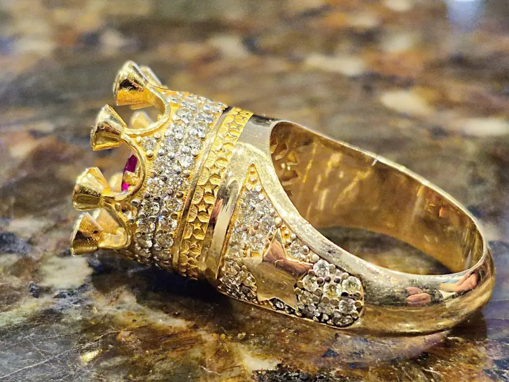

Custom Design & Repair
Custom Jewelry Design & Repair, Done In-House
Not every piece should be replaced — some just need the right hands. Our on-staff jeweler, part of a team with over 100 years of combined industry experience, handles custom design and repair directly, without outsourcing to a third-party bench.
Repair Services
- Ring resizing (upsizing and downsizing)
- Prong retipping and stone re-setting
- Chain and clasp repair
- Watch band and clasp repair
- Restoration of heirloom and estate pieces
- Cleaning and polishing
Custom Design Services
- Custom engagement rings and wedding bands
- Redesigning heirloom jewelry into modern pieces
- Setting a loose diamond or gemstone into a new mount
- One-of-a-kind commissioned pieces
Why Work With Our Jeweler
Because our jeweler works in the same building where jewelry is bought, sold, and appraised, they bring real-world market knowledge to every repair and design — not just bench skills. That means practical advice on what's worth restoring, what's worth redesigning, and what a custom piece should realistically cost.



Design & Repair FAQs
We offer custom jewelry repair and design services directly through our on-staff jeweler, who has hands-on bench experience as part of a team with over 100 years of combined industry experience.
Yes, our jeweler handles ring resizing in both directions — upsizing and downsizing — in-house.
Yes, chain and clasp repair is one of our standard in-house jewelry services.
Yes, we handle prong retipping and stone re-setting to secure loose stones or replace missing ones.
Yes, redesigning heirloom and estate pieces into updated, modern jewelry is one of our custom design specialties.
Yes, our jeweler creates custom engagement rings and wedding bands, including designs built around a loose diamond or gemstone you already own.
Turnaround depends on the repair’s complexity — simple work like cleaning or clasp repair can often be done quickly, while custom design or major restoration takes longer; our jeweler will give you a specific timeline when you bring in your piece.
In many cases, yes — repairing or redesigning an existing piece is often more affordable than buying new, especially for sentimental or estate jewelry; our jeweler can advise on the most cost-effective option.
We handle watch band and clasp repair in-house; ask our team about the specific watch repair you need when you bring it in.
No, you can bring in jewelry you already own, from any source, for repair, resizing, or redesign.